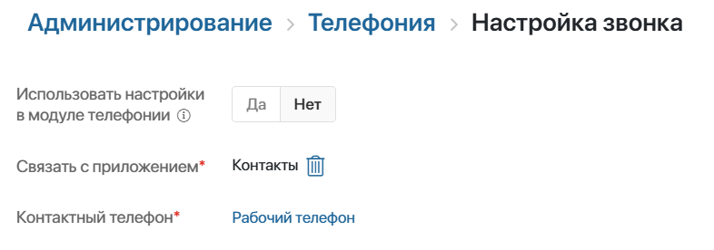
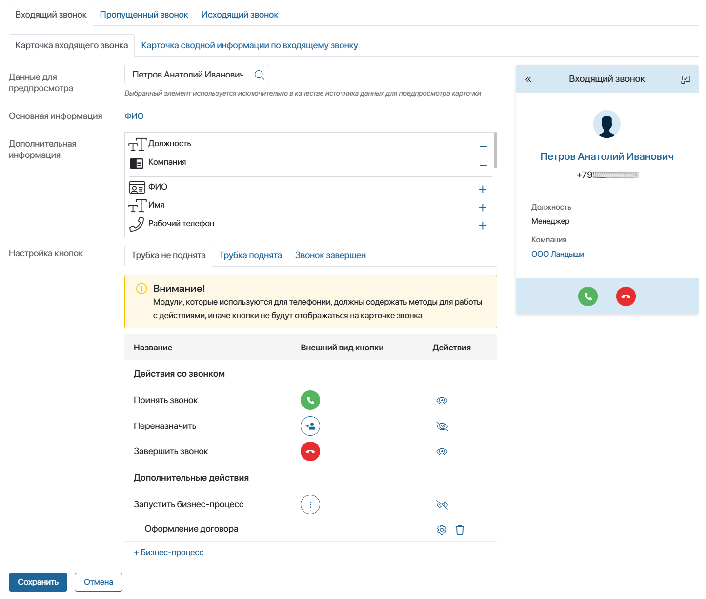

By default, a call page is configured in each connected telephony module.
If you have activated BRIX Communication Management license, you can access advanced settings in Administration > Set Up Call:
- Call page. You can select client data to be displayed in the notification of incoming, missed, and outgoing calls, as well as customize the visibility of action buttons for the sales rep at each stage of the call.
- Summary page. This is a form with additional data about the client and your communication with them. The sales rep will be able to open it from the call page, for example, during a call. You can customize the summary page for incoming and outgoing calls.
начало внимание
Only a system administrator can customize the call page.
конец внимание
Enable call page customization
- Go to Administration > Set Up Call.
- On the page that opens, fill in the fields:

- Use settings in the telephony module. Select No to enable advanced call page settings and the usage of the summary call page.
- Link to app*. Specify the app where the client data is stored. It is used to identify the client by phone number. You can show the app properties on the call page and on the summary information page for a call.
By default, the Contacts app is used. If you select another app, make sure that a field of the Phone number type is added to its form. - Contact phone number*. The number for client identification. By default, the Work phone field from the Contacts app context is specified.
After that, advanced settings of the incoming, missed, and outgoing call pages will appear on the page. You can customize them on separate tabs. You can:
- Define how the call page will look like, as well as specify the actions available to the sales rep with each of them.
- Customize the summary page that the sales rep will be able to open from incoming and outgoing calls.
Customize the appearance of the call page
The pages are customized in the same way for all types of calls: incoming, outgoing, and missed.
Let's see how to customize an incoming call as an example.
- Go to the Incoming call > Incoming Call Page tab. On the page, you can select the linked app fields and action buttons to display on the page. On the right side of the page, you can see how the call page will look like for a sales rep.
 - In the Data for preview field, select the linked app item, for example Contacts. It will become visible on the right side of the settings page.
- Select which client data the sales rep will see on the page during the call:
- General information. Specify the field of the linked app, in this case Contacts, that will be displayed above the phone number. By default, this is the client’s name, but you can choose other parameter, for example, a company.
- Additional information. Select the properties of the linked app to be displayed below the name and phone number, e.g. position, company, or email.
Customize action buttons on the call page
Specify which buttons will be available to the sales rep from the call page at each step.
To do this:
- Click a tab, for example, Dialing.
- Next to the button name, click the eye icon and set the visibility of the buttons for the sales rep.
- If you are adding a button to the call page to start a business process, click + Business Process and in the window that opens:
- Select the process that will be executed when clicking the button.
- Configure the input parameters to pass the call data to the process. In the table, map the process variables in the left column to the properties of the Calls app in the right column.
Then use the eye icon to display the button during a call.
You can add multiple processes. In such a case, when clicking the button, the sales rep will choose which process to start from the list.
To edit the startup settings, click the gear icon next to the process name. To delete a process, click the trash icon.
- When you have completed the call page settings, click Save.
Configure other types of call pages in the same way.
After that, you can proceed to customize the settings for the summary information page for an incoming and outgoing call.
You can export call page and summary page parameters to another company. To do this, export the Telephony workspace and import it into the system.
Found a typo? Select it and press Ctrl+Enter to send us feedback